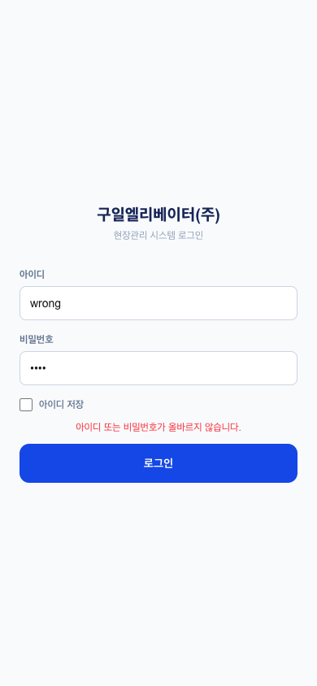

로그인 v0.4
1. 연결 — 어디서 와서, 어디로 가나
- 로그인 성공 → must_change(초기비번 1234 그대로)면 강제 비밀번호 변경을 지나야 홈 진입. 아니면 바로 홈
- 같은 화면이 PC 콘솔(/admin)에도 있음 — 동일 구조, 단 role=admin만 통과
- 지금은
SKIP_LOGIN=true(로그인 꺼짐)라 배포본에선 이 화면이 안 뜸 — 켜는 건 친구와 시점 맞춰서
2. 화면 요소
상태별 화면 (2026-08-04 캡처)

| 요소 | 설명 |
|---|---|
| 회사명 타이틀 | "구일엘리베이터(주)" — 화이트라벨 대상(6장) |
| 아이디 입력 | 기사=민원24 아이디, 관리자=지정 아이디. 자동 대문자·자동수정 꺼짐, trim만 |
| 비밀번호 입력 | Enter로 제출 가능. 초기비번 안내 문구는 일부러 없음(보안) |
| 아이디 저장 체크 | 체크 시 아이디만 localStorage 저장(비번 저장 안 함) — 재방문 시 자동 채움 |
| 에러 문구 | "아이디 또는 비밀번호가 올바르지 않습니다" 한 종류뿐(보안상 의도) |
| 로그인 버튼 | 아이디·비번 둘 다 있어야 활성. 처리 중엔 "로그인 중…" |
| 반응형 | 모바일=풀폭, PC=가운데 카드(흰 배경·그림자) |
3. 필요 요소 (동작 전제)
profiles: login_id 있음, is_active=true, deleted_at=null — login_id가 활성·미삭제 중 유일해야 함(중복이면 로그인 실패)user_secrets: 비번 해시(초기 1234, must_change=true) — 신규 직원 등록 시 1234 시딩 필수- 검증은 DB 함수(verify_login)에서 — 해시는 클라이언트로 안 나옴. 세션은 localStorage(guilAuthV1)
4. QA 체크포인트
- 중복 login_id → 둘 다 로그인 실패. 기사 민원24 아이디와 관리자 아이디가 겹치면 사고(과거 실제 사례: guil238684)
- login_id 없는 기사(민원24 미등록) → 로그인 불가 — 등록 시 확인
- user_secrets 없는 신규 → "아이디/비번 틀림"으로 표시됨(실은 비번 미설정) — 원인 구분은 DB 확인
- 강제 비번변경이 새로고침해도 반복 안 되는지 (앱·콘솔 둘 다 수정 완료 — 회귀 주의)
- 아이디 저장: 체크→저장·자동채움·체크복원 / 해제→삭제. 비번은 절대 저장 안 됨
- 퇴사·비활성 계정 차단 (is_active=false, deleted_at)
- 비번 규칙(6자 이상 숫자)은 변경 화면 쪽 — 로그인엔 규칙 검사 없음(기존 비번 그대로 통과)
- 배포본에서
?as=/?auth=파라미터는 localhost 전용 — 프로덕션에선 무시되는지
5. 알려진 한계 (보류 중)
- 연속 실패 잠금(브루트포스 방어) 없음 — 마이그 076에 친구가 초안 작업 중
- 세션이 localStorage 소프트 세션 — 진짜 격리는 RLS+서버 세션(멀티테넌트 Phase 3)
6. 화이트라벨 — 구일전용 → 타사 일반화
주황 점선 = 회사마다 갈아끼우는 자리. 회색 = 회사와 무관한 공통 부품(안 건드림).
1회사 로고 (옵션)
+ 회사명 타이틀
+ 회사명 타이틀
"구일엘리베이터(주)" 자리
2보조 문구
"현장관리 시스템 로그인" — 서비스명 쓸지 미정
아이디 입력 — 공통 (단 ③ 유일성 범위가 바뀜)
비밀번호 입력 — 공통
아이디 저장 — 공통
4로그인 버튼
(색상 = 회사 테마색, 옵션)
(색상 = 회사 테마색, 옵션)
| # | 지금 어디에 박혀 있나 | 어떻게 갈아끼우나 |
|---|---|---|
| 1 | LoginScreen.jsx:35 — 회사명 하드코딩. 로고는 아예 없음 | 테넌트 설정 테이블 tenants(id, name, logo_url, theme_color)을 만들고 앱 시작 시 1회 로드 → tenant.name·tenant.logo_url로 치환. 로고 없으면 회사명 텍스트만(지금 모양 그대로) |
| 2 | LoginScreen.jsx:36 — "현장관리 시스템 로그인" | 서비스명(예: Eleva)으로 통일할지, 테넌트별 문구로 할지 미정 — 서비스명 통일이 관리 쉬움(권장) |
| 3 | verify_login RPC(마이그 067) — login_id가 전역 유일 | 확정(2026-08-04): 아이디 전역 유일 유지, 화면 변경 없음. 온보딩이 컨시어지형(우리가 테넌트 세팅+계정 발급 후 URL 전달)이라 아이디를 우리가 만들어 줌 → 겹칠 일이 없고 회사코드 입력·서브도메인이 불필요. 셀프 가입 없음 — 직원은 관리자가 인사관리에서 등록. DB만 tenant_id 컬럼 추가(아이디에서 회사 역추적) |
| 4 | 버튼·포커스링 등 파란색 계열이 Tailwind 클래스로 산재 (bg-blue-700 등) | 1차: 안 바꿈(공통 파랑 = 서비스 브랜드색). 2차(원하는 회사만): CSS 변수 --brand로 뽑아 tenant.theme_color 주입 — 산재한 클래스를 변수 참조로 바꾸는 일괄 작업이라 별도 단계로 |
갈아끼우는 순서: 테넌트 테이블부터 (①이 첫 소비자) → 나머지 화면들도 같은 tenant.*를 읽게 확장. 하드코딩 잔여분은 04 스냅샷 스캐너가 자동 추적(현재 47곳).
이전 버전 (v0.2까지) — 표만 있던 형태
| 지금 (구일) | 타사 입주 시 |
|---|---|
| 타이틀 "구일엘리베이터(주)" 하드코딩 | tenant.name에서 읽기 (+로고 옵션) |
| 기사 login_id = 민원24 아이디 | 민원24와 분리된 일반 아이디 (067에서 이미 분리해둠) |
| login_id 유일성 = 전역 | 테넌트별 유일 + verify_login 테넌트 스코프 |
| 회사 구분 없음 | 테넌트 식별 — 아이디 유도 or 회사코드/서브도메인 미정 |
| 초기 비번 1234 고정 | 테넌트별 정책 가능 미정 |
변경 이력
| 버전 | 날짜 | 변경 |
|---|---|---|
| v0.4 | 2026-08-04 | 테넌트 식별 방식 확정 — 컨시어지 온보딩(우리가 세팅 후 URL·계정 전달)이므로 아이디 전역 유일 유지, 회사코드·서브도메인·셀프 가입 없음. 6장 ③ 미정 해소 |
| v0.3 | 2026-08-04 | 6장 화이트라벨을 와이어프레임+치환 가이드로 개편 — 갈아끼울 자리 4곳(로고·문구·아이디 유일성·테마색)을 번호로 표시하고, 각각 "지금 어디에 있나(파일:줄)·어떻게 바꾸나·순서"를 명시 |
| v0.2 | 2026-08-04 | 상태별 캡처 3장 추가(로그인·실패·강제 비번변경 — localhost ?auth=1에서 실물 캡처), 연결 다이어그램의 강제변경 자리를 실제 캡처로 교체, 홈 썸네일 최신화 |
| v0.1 | 2026-07-30 | 최초 작성 — docs/QA-RULES.md의 "1. 기사 로그인" 항목을 흡수(연결·요소·QA·화이트라벨) |